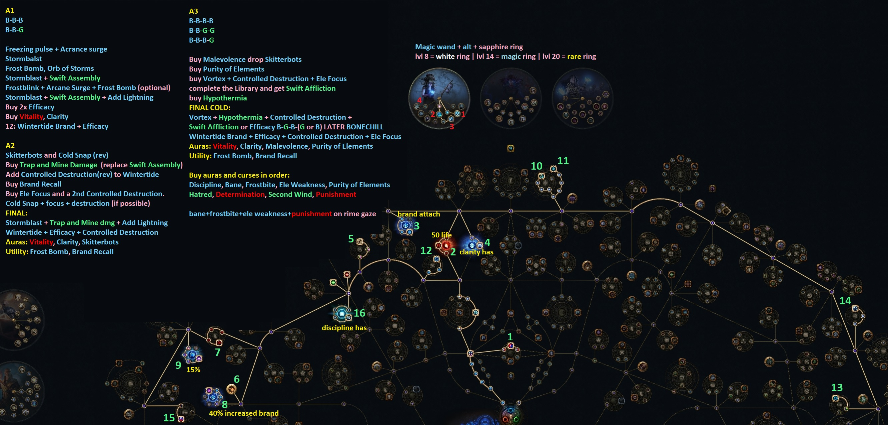

START
ShakCentral's Cold DoT For Everyone

Low-Life Progression Build
Buy items in Acts 9-10. Start with Rime Gaze and a wand from poe-trade group
Buy a 4-5L Shavronne’s ASAP. Socket gems (see 3.2) and go Low-Life
Buy items with high ES. Try for 125-150 on Boots and 150-175 on Gloves.
Level 21 Vortex (And Creeping Frost if applicable)
Amulet with 3+ decent modifiers. Anoint Divine Judgment (see 4.2).
Brush with Death + Vile Reinvigoration Medium Cluster
Prism Guardian
Large Thread of Hope
Energy From Within and Rumi’s Concoction
6-Link Shavronne’s Wrappings
Level 21 Vaal Cold Snap
Rime Gaze with Lab enchant (40% Vortex damage is most common)
Endgame Wand (See section 4.1)
Mark of the Shaper & Elder Unset Ring
Awakened Ele Focus, Controlled Destruction (x2), Swift Affliction
Presence of Chayula (Not mandatory but powerful)
Tempering Catalysts on Presence of Chayula
Azure + 2 Golden oils for Tranquility Anoint (see 4.2)
ilvl 82+ Elder Unset with T1/T2 Strength AND Dexterity
Crusader Crystal Belt with flat ES, % ES, and maybe Crusader suffix(s)
8 passive Large Cold Cluster with 3 notables
2x Small ES Cluster with Energy From Naught (or Brush with Death)
Brush with Death + Vile Reinvigoration Medium Cluster